ゴルフのルールと数字のコラム
仲間内のゲームのルールと、コンペのハンデ計算、スコアの数字を、実際に数えて確かめて書いた記事です。
ゲームのルール
握り（仲間内でポイントを競うゲーム）の遊び方と計算方法。
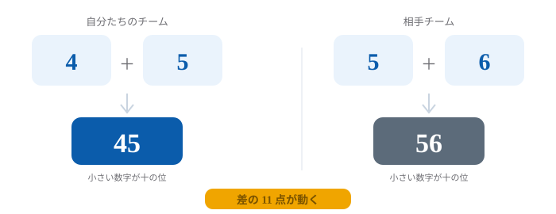
ラスベガス
2桁の作り方・バーディ倍・反転・キャリー
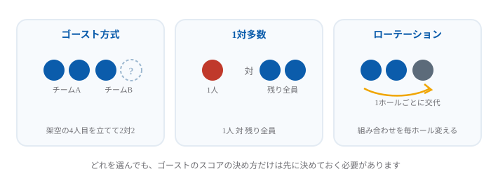
ラスベガスを3人でやる方法
ゴースト・1対多数・ローテーション
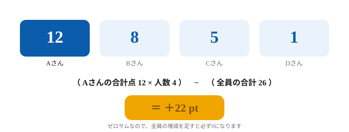
オリンピック
配点と計算方法・早見表・火消し
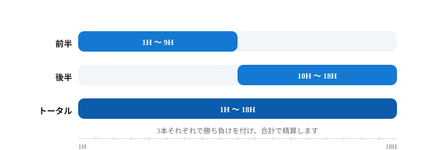
ナッソー
前半・後半・トータルの3本勝負
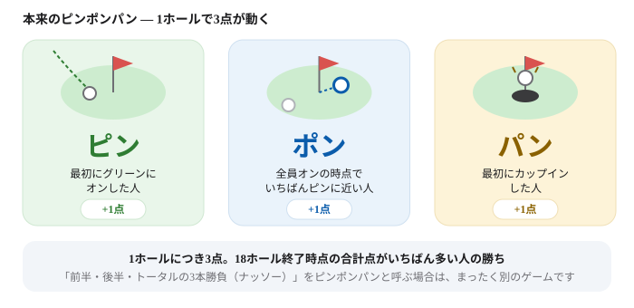
ピンポンパン
ピン・ポン・パンで1ホール3点
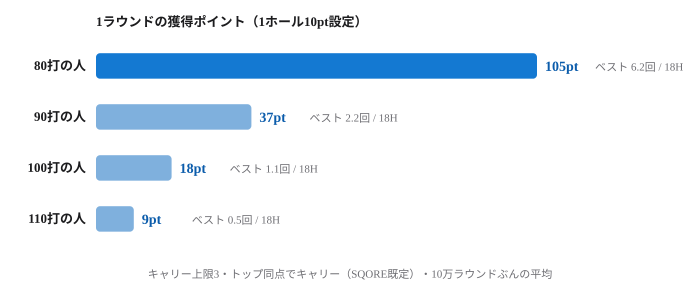
ホールベスト
最少打数がポイント・同点キャリー
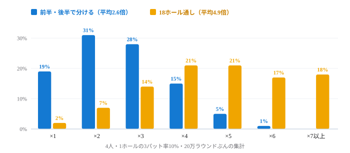
へび（スネーク）
3パットで移動する罰ゲーム
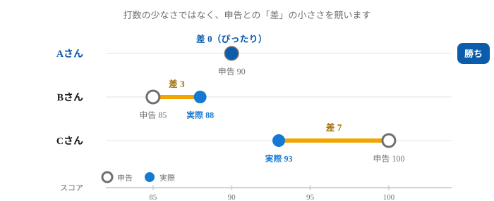
オネストジョン
申告スコアに近い人が勝つ
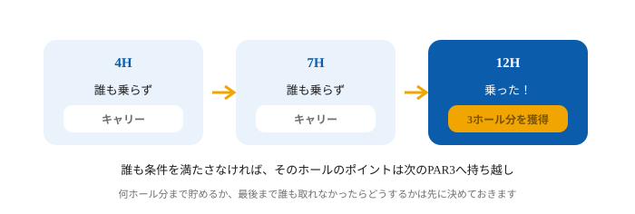
ドラコン・ニアピン
誰も取れなかったときの扱い
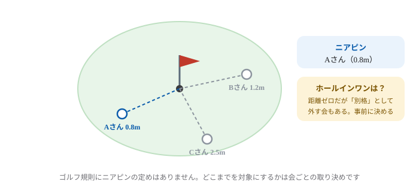
ニアピンとは
意味とルール、ニヤピンとの違い
コンペ・新ペリア
コンペのハンデ計算を、実際に何万回も回して確かめた記事。
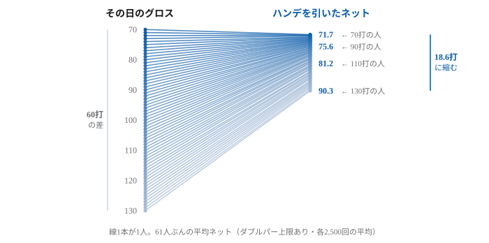
新ペリア方式のルールとハンデ計算
「誰でも優勝できる」のか3万回で検証
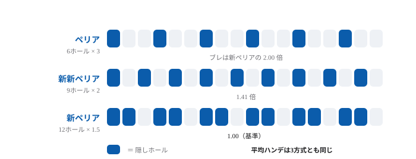
ペリア・新ペリア・新新ペリアの違い
平均ハンデは同じ。違うのはブレの大きさ
スコアとハンディキャップ
スコアの数字の読み方と、アプリの選び方。
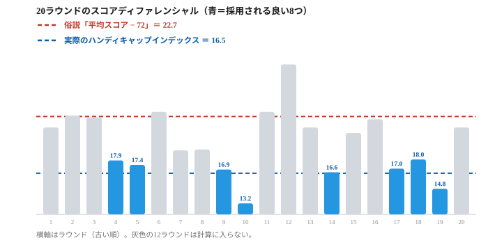
ハンディキャップの計算方法
JGAの式を手順どおりに。平均スコア−72とは6.2打違う。ローハンディとは
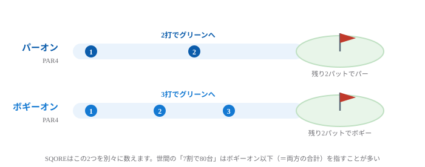
ボギーオンとは
パー4なら3打目でオン。スコア別の目安
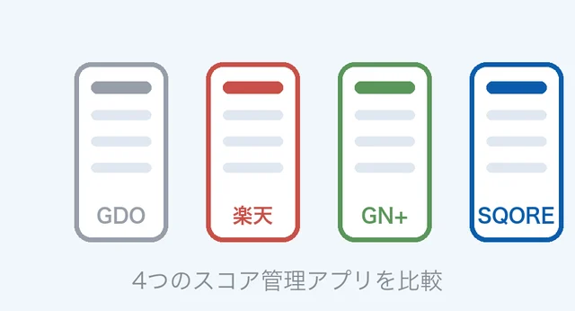
ゴルフスコア管理アプリの違い
GDO・楽天・GN+・SQOREを公式情報で比較
ゴルフ場選び
予約サイトの設備アイコンでは分からないところを、1件ずつ確認した記事。ゴルフ場検索の使い方とあわせてゴルフ場選びのページにもまとめています。

ラウンドの記録はSQOREで
打数を入れるだけでスコアも握りのポイントも自動計算。同じコースを回ると、いま立っているホールの自分の平均スコアとOB率が打つ前に出ます。